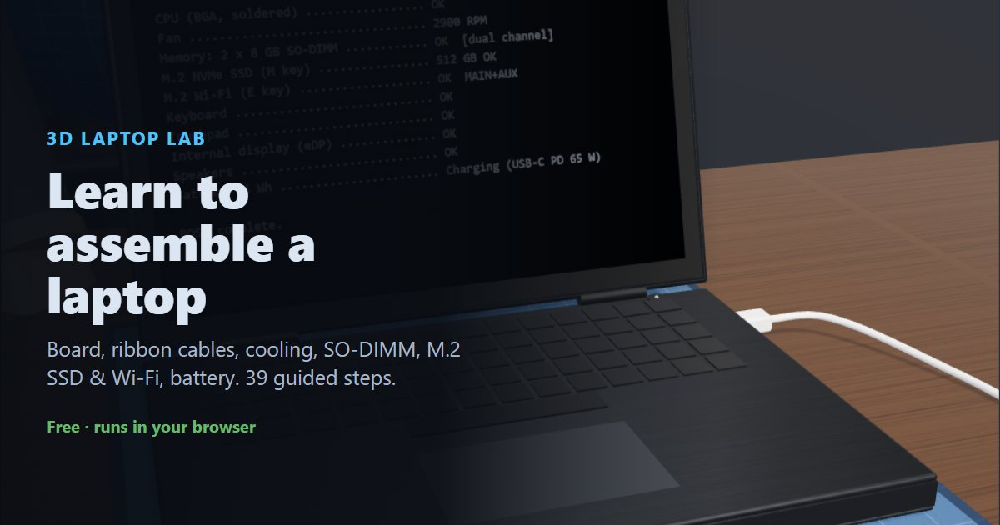

How to assemble a laptop, step by step
This guide walks through putting a laptop together from the inside of its base: the system board and ribbon cables, the cooling system, memory and storage, wireless and audio, the battery, and finally closing it up and powering on. Every step matches the free 3D laptop assembly simulator, where you can practise in your browser before you open a real laptop. Real laptops vary a lot, so always follow your model's service manual.
▶ Practise this in the free 3D laptop assembly simulator
What you need
- Phillips #0 or #00 precision screwdriver
- Antistatic wrist strap and mat
- Plastic spudger or pry tool (for clips and connectors)
- A magnetic screw tray or a labelled sheet to keep screws in order
- Thermal compound and isopropyl alcohol for cleaning old compound
- The parts you're installing: SO-DIMM memory, M.2 SSD, M.2 Wi-Fi card, battery
Contents
Part 1: Prepare the workspace
Put on the ESD vest
Put on an ESD vest or smock. It keeps static from your clothing away from the components.
An ESD smock or vest is standard practice in electronics labs.
Put on the antistatic wrist strap
Put on an antistatic wrist strap and clip it to a ground point, such as the GND snap on the mat. Laptop boards are packed tightly and every chip on them is static-sensitive.
Lay the laptop base on the mat
Lay the laptop base (the keyboard and palm-rest assembly) on the antistatic mat upside down, with the lid closed underneath, so the inside faces you.
Make sure there is no power
Check that the AC adapter is unplugged and no battery is connected before you work inside the laptop.
A laptop battery can still short and damage the board even when the laptop is switched off. When you take a laptop apart, disconnect the battery first. When you put one together, connect it last.
Part 2: Install the system board
Place the system board
Lower the system board into the base so its screw holes line up with the bosses in the base.
Secure the system board
Fasten the system board with its screws.
Laptop screws come in different lengths. Keep track of where each one came from: a long screw in a short hole can punch up through the keyboard deck.
Open the keyboard connector
The keyboard plugs into a ZIF (zero insertion force) connector. Flip its small latch up to open it.
Insert the keyboard ribbon cable
Slide the keyboard ribbon into the open connector with the gold contacts facing down toward the pins.
Close the keyboard latch
Press the latch back down. That clamps the ribbon in place.
Never pull a ribbon out with the latch closed. It tears the contacts.
Insert the touchpad ribbon cable
Open the touchpad (TP) connector's latch if it isn't already open, and slide the touchpad ribbon in with the gold contacts facing down.
Close the touchpad latch
Close the latch to lock the touchpad ribbon.
Connect the display cable
The eDP cable comes out of the hinge from the screen. Press it straight down into the eDP socket at the back edge of the board.
Part 3: Install the cooling system
Apply thermal compound
Apply a small amount of thermal compound to the shiny CPU die.
Laptop CPUs are soldered to the board (BGA), so there is no socket or Pin 1 to line up. Before you re-paste a used laptop, wipe off the old compound with isopropyl alcohol.
Fit the heat pipe & fan assembly
Lower the cooling assembly onto the CPU so its copper plate covers the die and the four screws line up with the holes around it.
Tighten the heat-sink screws in order
The screws are numbered. Tighten them in order 1 → 2 → 3 → 4, corner to opposite corner, so the plate presses down evenly on the die.
Connect the fan cable
Plug the fan cable into the header labelled FAN. A fan that isn't plugged in means the laptop overheats and shuts down.
Part 4: Install memory & storage
Insert the first SO-DIMM
Line the notch on the SO-DIMM up with the key in the slot and slide the module into the slot at an angle.
Press the module down
Laptop memory goes in at about 30° and then hinges down. Press the module flat until the side clips snap over it.
Insert the second SO-DIMM
Install the second module in the other slot the same way: notch lined up, in at an angle.
Press the second module down
Press the second module flat until both clips lock.
Remove the M.2 retaining screw
Unscrew the small screw on the standoff at the end of the long M.2 SSD slot. It holds the drive down later.
Insert the M.2 SSD
Slide the SSD into the long M-key slot, then lay it flat on the standoff. The notch in the gold edge only fits one way.
Secure the SSD
Put the retaining screw back in to hold the card flat against the standoff. Don't overtighten it.
Part 5: Install wireless & audio
Remove the Wi-Fi retaining screw
Unscrew the retaining screw at the end of the short WLAN (E key) slot.
Insert the M.2 Wi-Fi card
Slide the Wi-Fi card into the short WLAN (E key) slot and lay it flat.
Secure the Wi-Fi card
Put the retaining screw back in to hold the card flat against the standoff. Don't overtighten it.
Connect the MAIN antenna lead
The antenna leads come out of the hinge from the screen. Snap the black lead onto the terminal marked MAIN.
Connect the AUX antenna lead
Snap the white lead onto the terminal marked AUX. Press straight down until it clicks.
Press antenna connectors on and lift them off straight. Don't pull them sideways: they break easily.
Fit the speakers
Fit the speakers into the front corners of the base.
Connect the speakers
Plug the speaker cable into the header labelled SPK.
Part 6: Install the battery
Place the battery
Place the battery in its bay at the front of the base. Don't connect it yet.
Check the battery for swelling first. A swollen Li-ion battery must not be installed.
Secure the battery
Fasten the battery to the base with its two screws.
Connect the battery (last)
With everything else connected, plug the battery cable into the BATT connector. Push it in straight and evenly.
Verify the connections
Check that every connector is fully seated: keyboard, touchpad, display, fan, antennas, speakers and battery.
Part 7: Close up & power on
Fit the bottom cover
Put the bottom cover on and press around the edges so all the clips engage.
Secure the bottom cover
Fasten the bottom cover screws.
Turn the laptop over
Turn the laptop right side up and open the lid.
Connect the power adapter
Plug the USB-C power adapter into the USB-C port marked ⚡ (Power Delivery). Not every USB-C port can charge.
Power on & verify
Press the power button above the keyboard and watch the POST on the screen.
Common mistakes to avoid
- Working on a laptop with the battery connected
- A connected battery can short and damage the board even when the laptop is off. Disconnect it first when you take a laptop apart, and connect it last when you put one together.
- Inserting a ribbon cable upside down or with the latch closed
- Open the ZIF latch first, slide the ribbon in with the gold contacts facing the pins, then close the latch. Pulling a ribbon out with the latch closed tears its contacts.
- Tightening heat-sink screws out of order
- Laptop cooling plates are numbered. Tighten 1, 2, 3, 4 (corner to opposite corner) so the plate presses evenly; uneven pressure can crack the CPU die.
- Forgetting the fan cable
- The laptop will run, then overheat and shut down. Plug the fan into the header labelled FAN.
- Putting an SO-DIMM in backwards or not pressing it flat
- Line the notch up with the key, insert at about 30°, then press the module down until the side clips lock.
- Swapping the M.2 SSD and Wi-Fi slots
- An NVMe SSD is M-keyed and usually 80 mm long; a Wi-Fi card is E-keyed and short. They're keyed differently, so neither fits the other's slot.
- Swapping the MAIN and AUX antenna leads
- The black lead goes on MAIN and the white or grey lead on AUX. Swapped, Wi-Fi range and speed drop.
- Using the wrong screw in the wrong hole
- Laptop screws come in different lengths. A long screw in a short hole can punch up through the keyboard deck. Keep screws in order as you remove them.
- Plugging the charger into a data-only USB-C port
- Not every USB-C port can charge. Use the one marked with a lightning bolt (USB Power Delivery) or a battery symbol.
- Installing a swollen battery
- A swollen lithium-ion battery is a fire risk. Never install one, and recycle it properly.
Frequently asked questions
Can you upgrade the CPU in a laptop?
Almost never. Most laptop CPUs are soldered to the system board (BGA packaging), so there's no socket. You can usually upgrade the RAM (if it uses SO-DIMM slots), the M.2 SSD and the Wi-Fi card.
How do you install RAM in a laptop?
Line the notch on the SO-DIMM up with the key in the slot, push the module in at about a 30° angle, then press it down flat until the clips on each side snap over it.
What is the difference between M.2 M key and E key?
The key is the notch pattern in the card's gold edge. NVMe SSDs use M key and are usually 2280 (22 × 80 mm); Wi-Fi cards use E key and are usually 2230. The slots are keyed to match.
Which antenna goes on MAIN and which on AUX?
The black lead goes on the terminal marked MAIN (often a black triangle) and the white or grey lead goes on AUX. Press them straight down until they click.
When should you disconnect a laptop battery?
First, before you touch anything else inside the laptop. When reassembling, connect it last, after every other cable is in place.
Can I practise laptop repair without a real laptop?
Yes. The free Laptop Lab 3D simulator runs in your browser and walks you through 39 steps, catching mistakes like an upside-down ribbon cable or swapped antenna leads.
Reading is one thing. Doing it without breaking anything is another.
▶ Practise all 39 steps in 3DNext: How to build a PC, step by step · How to repair a phone · How to repair a tablet